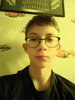

Hei! Olen Tino Hukkanen, intohimoinen kehittäjä Suomesta. Rakastan monimutkaisten ongelmien ratkaisemista ja luovien ratkaisujen löytämistä.
Matkani teknologian parissa alkoi, kun löysin ohjelmoinnin lukiossa. Siitä lähtien olen ollut kiinnostunut siitä, miten teknologiaa voidaan käyttää todellisten ongelmien ratkaisemiseen ja ihmisten elämän parantamiseen.
Kun en koodaa tai opiskele, minut löytää usein luontopoluilta, kokeilemasta uusia reseptejä, tai uppoutuneena hyvään kirjaan.